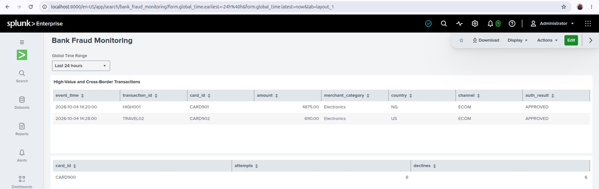
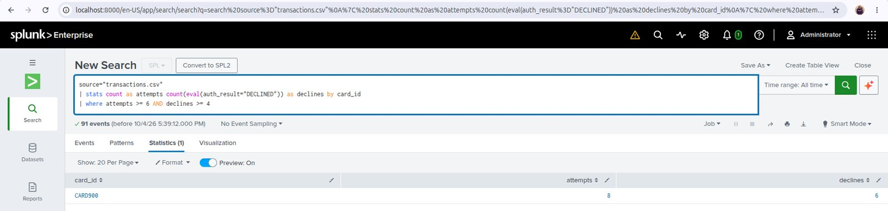

Bank fraud monitoring with Splunk
A transaction-monitoring dashboard for a fictional bank that surfaces high-value, cross-border and card-testing activity for analyst review, built on synthetic card data.
Lab work with synthetic or lab-provided data. No production systems or real customer data were involved.
Evidence


Scope
A fictional bank scenario using synthetic transaction records only. A Python script with a fixed seed generated a baseline of Canadian card transactions plus injected test records, written to a CSV and indexed in Splunk. No bank system, customer account, card network or payment rail was touched.
Detection logic
Two rules feed the dashboard:
- High-value or cross-border: transactions at or above CAD 1,000, or with a country outside the Canadian baseline (
amount >= 1000 OR country != "CA"). - Repeated declines: cards with at least 6 attempts and 4 declines, a pattern that can point to card testing.
Results
| Signal | What surfaced | Analyst interpretation |
|---|---|---|
| High value + cross-border | CAD 4,875 e-commerce electronics purchase, NG country code | Lead only. Verify customer history, approval context and settlement status. |
| Cross-border | CAD 690 e-commerce purchase, US country code | Validate travel, merchant and cardholder context before escalating. |
| Card testing | One card with 8 attempts and 6 declines | Consistent with card testing. Needs cardholder and merchant context. |
The dashboard is a tabular review surface. It does not block transactions, open cases or label anything as fraud.
Recommended follow-up
- Confirm the transaction and cardholder identity through approved internal procedures.
- Check device, merchant category, velocity, geography, prior disputes and authentication signals.
- Review authorization and settlement state with the payments team, using hold or recovery controls only when authorized.
- Tune amount and geography thresholds against a representative baseline and measure false positives before operational use.
Limitations
The sample is small and synthetic, and the rules use simple indicators. A high amount or a foreign country code can both be legitimate, so the output is a set of investigation leads, not fraud verdicts. No production tuning or detection rate is claimed.